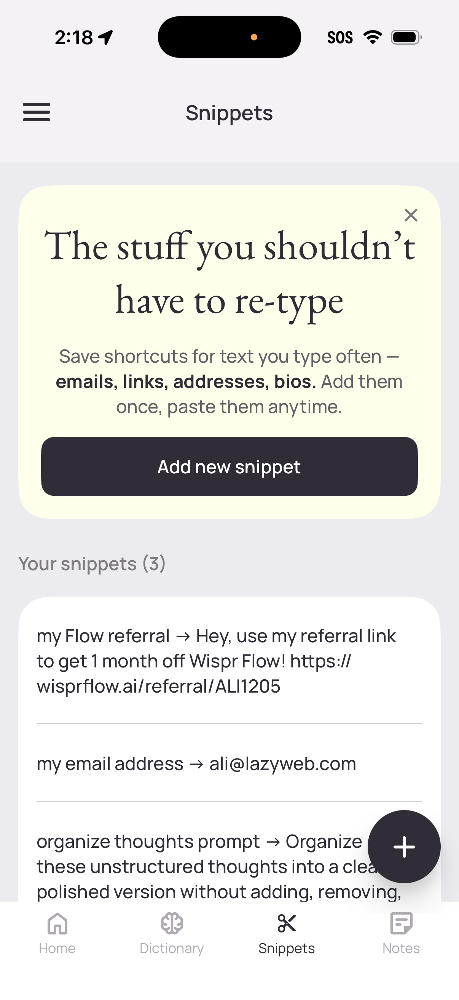
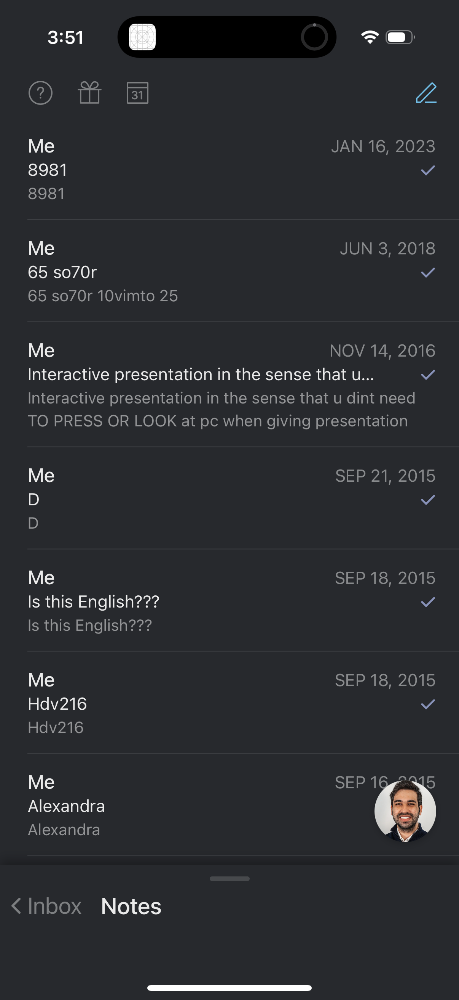
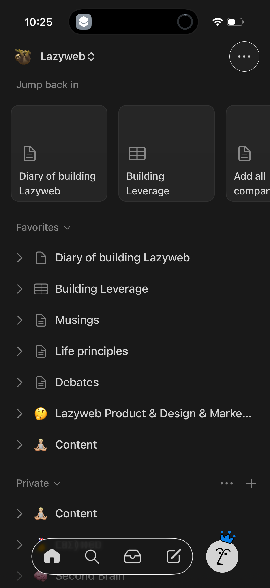
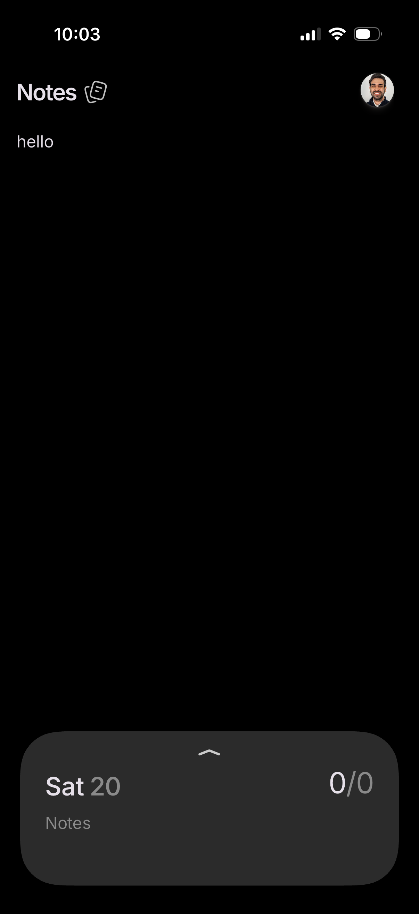
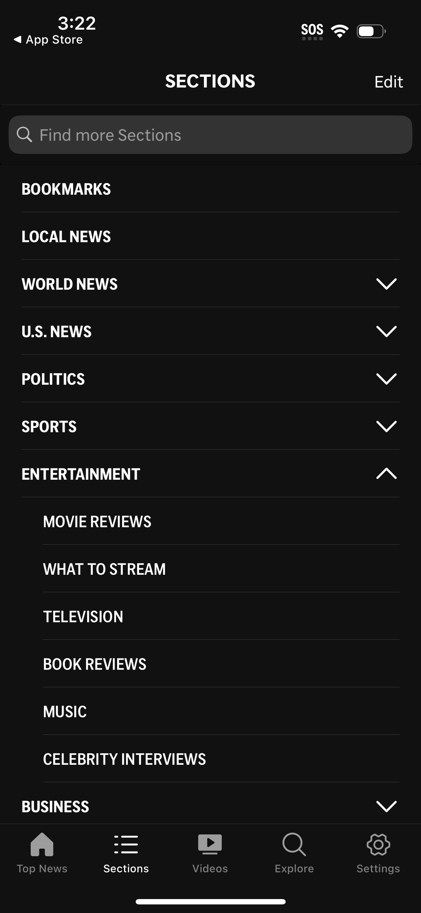
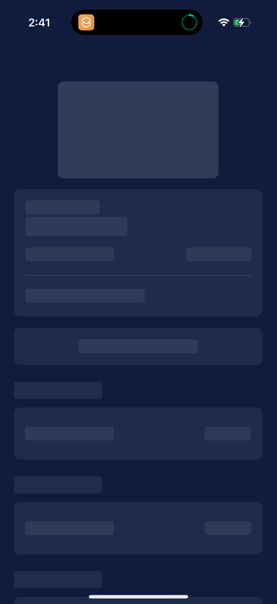
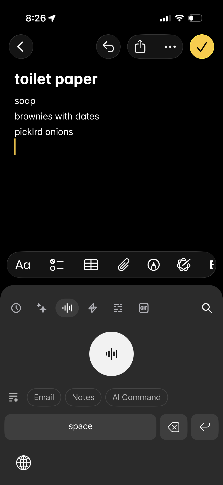

2026-05-10
Clipdeck is essentially a tap-to-copy snippet library — closest precedent is WhisperFlow's "Snippets" screen (name → content rows you tap to paste). The current design is already in the right neighborhood (dark theme, card-per-item, version chip, toast feedback). The biggest gaps vs. best-in-class are: no search/filter for >20 items, no copy affordance per row (the whole row is a button but nothing signals "this copies"), and no skeleton loading state (the empty "Loading…" string is dated).
The clipdeck page (per clipdeck/src/static/index.html + app.css):
#0f1117 bg, #6c63ff accent purple, #3ecf8e success green.sections)Why: Once the library has more than ~15 items, scanning by eye breaks. WhisperFlow, Notion, and Apple News all put a search field above grouped lists. The site is private/single-user so don't bother with fuzzy ranking — substring match across title + subtitle + description is enough.
┌─────────────────────────────────────────┐
│ clipdeck v1.4.0 [Reload] │
├─────────────────────────────────────────┤
│ 🔍 Filter prompts and skills… │ ← new
├─────────────────────────────────────────┤
│ PROMPTS │
│ ┌─────────────────────────────────────┐│
│ │ Code review checklist v2.1 ││
│ │ Reviews PRs against CLAUDE.md ││
│ └─────────────────────────────────────┘│
│ ┌─────────────────────────────────────┐│
│ │ Bug triage v1.0 ▎ ││ ← resource bar
│ │ Routes incoming bug reports ││
│ └─────────────────────────────────────┘│
└─────────────────────────────────────────┘
Why: A row that looks like a card has no signal it's a button. When the user gets it wrong once (taps thinking it'll open), the toast saying "Copied" is delightful but jarring. Two options, in increasing intrusiveness:
📋 (or SVG clipboard icon) at the right edge of .title-row, ghosted to --text-subtle. Costs ~16px of width and removes all ambiguity.The current cursor: pointer plus :active { transform: scale(0.995) } is correct on desktop but invisible on iPhone (no hover, scale is too subtle for touch).
Why: A pulsing word centered on a black screen looks broken on a slow GitHub fetch. Amex, and most modern dark-theme apps, show shimmer rectangles in the actual list shape. You already have the layout — render 3-4 grey-on-grey card stubs. The fade-in on the real data masks any layout jump.
┌─────────────────────────────────┐
│ ▓▓▓▓▓▓▓▓▓▓ │ ← shimmer
│ ▓▓▓▓▓▓▓▓▓▓▓▓▓▓▓▓▓ │
├─────────────────────────────────┤
│ ▓▓▓▓▓▓▓▓ │
│ ▓▓▓▓▓▓▓▓▓▓▓▓▓ │
└─────────────────────────────────┘
Why: AP News collapses sections, but their list is 12+ deep categories. Clipdeck likely has 2-3 sections (prompts, skills, maybe agents). Collapsing them adds a tap with no payoff. Revisit only if section count exceeds 5.
Why: Current align-items: baseline works but a v-chip floating at the title baseline reads as part of the title. Notion and Linear treat metadata pills as right-aligned trailing accessories. Use justify-content: space-between or a small gap with explicit alignment.
Why: Almost every productivity app on mobile has a 4-tab bottom nav. Clipdeck is single-screen by design. Adding one would be cargo-culting. The current full-bleed list is correct. Worth calling out so it doesn't get added later "for consistency."

WhisperFlow — Snippets screen: name → content rows, primary "Add new snippet" CTA, list of saved name-to-content pairs. Closest 1:1 precedent for clipdeck. [Lazyweb]
Superhuman — Notes inbox with title + preview snippet + last-modified date per row. Demonstrates how clean a metadata-rich list can be without crowding. [Lazyweb]
Notion — Dark "Jump back in" + Favorites sections with chevron affordance. Validates clipdeck's section-grouped layout, but Notion makes section boundaries quieter than clipdeck's all-caps headers. [Lazyweb]
Persist — Minimal dark notes header with profile avatar. Reference for how restrained a single-screen toolbar can be. [Lazyweb]
AP News — Sections with searchable list and expand/collapse rows. Anti-pattern for clipdeck: only worth it once category count grows past ~5. [Lazyweb]
Amex — Dark skeleton/shimmer loading state. Replaces clipdeck's centered "Loading…" text. [Lazyweb]
Raycast — Dark list editor; Raycast (especially on macOS) is the strongest design comparator for "command palette over a list of stored items". [Lazyweb]What the strong examples share:
--text-muted, never compete with row titles. Clipdeck already nails this.The research surface is wide but shallow — many "list of items, dark theme" screens exist, but clipdeck's specific problem ("private library where each tap copies content to clipboard") has very few direct precedents. WhisperFlow Snippets is the only direct 1:1; Raycast Snippets (macOS) is the spiritual ancestor; Apple Shortcuts and iOS Text Replacements are the closest system-level analogs.
That scarcity is informative: clipdeck doesn't need to imitate anyone closely. The pattern language is established, and the current implementation is competent. The remaining work is affordance clarity and scale (filter, skeleton loading), not visual redesign.